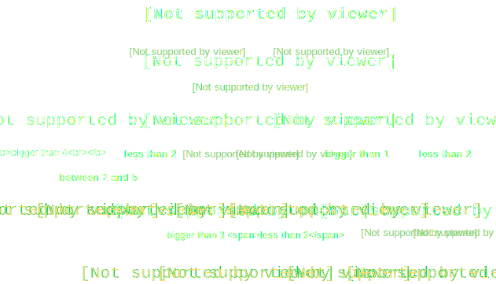

Program for i dag
- Vi skal lave øvelser med
- Booleans
- Repetition (nested for-loops, enumerate, write)
- Opgave 1: Frugtklassifikation
- Repetitionsøvelser
Opgave 1: Frugtklassifikation
I denne opgave skal vi lave en funktion til at kunne bestemme forskellige typer frugt

Decision tree - type af frugt

1.1 Funktion
- Lav en funktion ClassifyFruit, som tager informationer om en frugt som input og som outputter navnet på frugten
- Brug logikken fra decision tree'et på det sidste slide så funktionen kan klassificere
- vandmelon, æble, vindrue, grape, citron og kirsebær
- Brug funktionen til at bestemme frugten nedenfor:
# Unknown fruit
round = True
color = "yellow"
size = "large"
sweet = False
1.2 Brugerinput
- Lad brugeren indtaste værdier for en frugt og bestem frugten vha. funktionen fra sidste slide
- Udvid funktionen til også at kunne bestemme agurker
- Giv brugeren en advarsel hvis en agurk er indtastet
Repetition
- Hvad vil outputtet af nedenstående kode være?
tokens = ["(eksempel)", "20'er", "24-timer", "f.eks."]
for w in tokens:
print(w)
for c in w:
if not(c.isalpha() or c.isnumeric()):
print(c)
print()
- Lav en liste i python med en række sætningner i
- Brug enumerate til at printe alle sætningerne fra listen og deres placeringen i listen
- Gør det samme med alle ordene fra sætningerne (men med placering i sætningen)
- Skriv resultaterne til en fil i stedet for at printe
- Indlæs filen fruits.txt i python
- Hver linje svarer til én frugt
- Alle informationer omkring frugten er adskilt af \t
- Brug funktionen fra Øvelse 1 til at bestemme typerne på alle frugterne